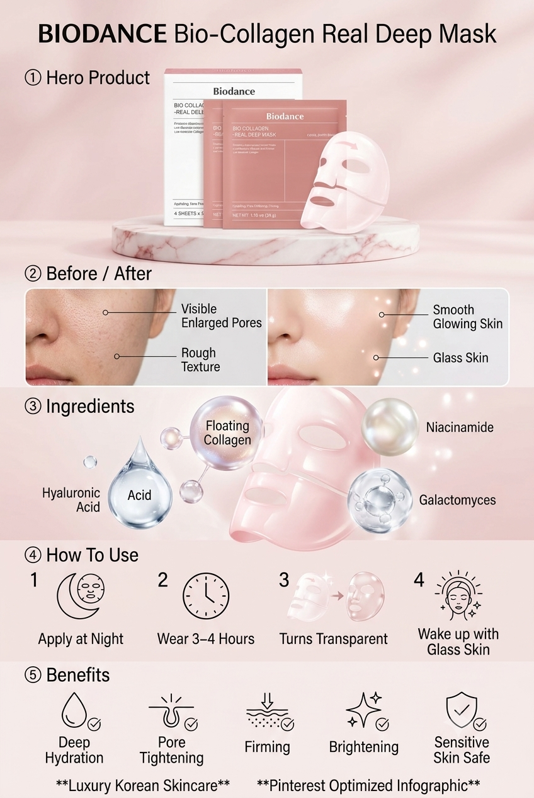
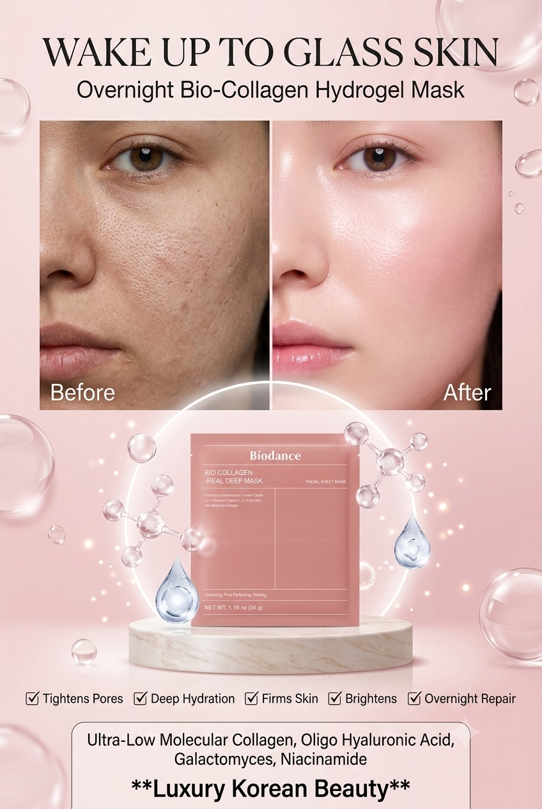
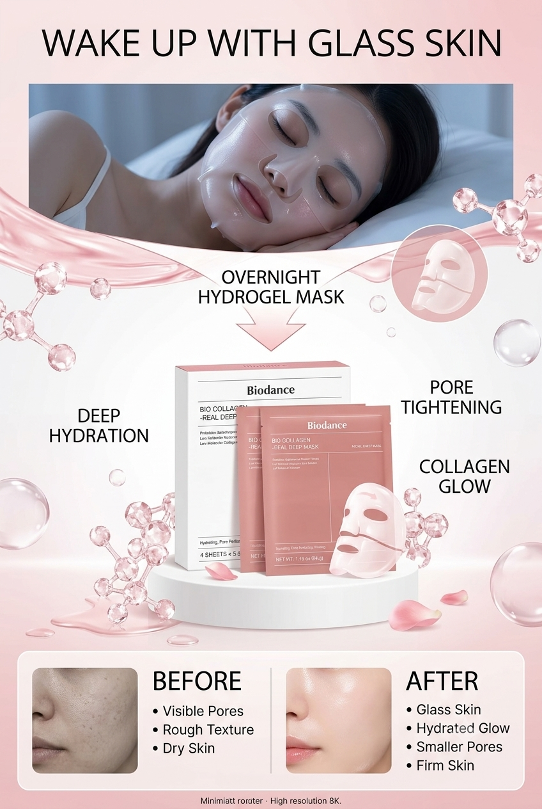

The short version
The BIODANCE Bio-Collagen Real Deep Mask is a two-piece hydrogel sheet mask designed for extended wear. The current Amazon seller listing expressly promotes “pore tightening & firming,” “deep hydration,” “brightens the skin,” and “unique overnight absorption.” It also describes deep, long-lasting improvements beyond temporary effects. These are product-listing claims from the seller; KokoroFlow has not independently tested or verified them.
The listing describes a 34 g mask with four masks per box. The ingredient list includes glycerin, niacinamide, galactomyces ferment filtrate, allantoin, adenosine, collagen extract, hydrolyzed hyaluronic acid, and several fermented ingredients.
Its clearest practical distinction is not the word “collagen”; it is the long-wear hydrogel format. That format may appeal to someone who enjoys an occasional, occlusive hydration step and does not mind keeping a mask on for several hours. It is less compelling for someone who dislikes sheet masks, wants a fast routine, or expects permanent pore reduction from one application.
What the ingredient list suggests
Humectants and the hydrogel base
Glycerin, betaine, dipropylene glycol, butylene glycol, and hydrolyzed hyaluronic acid are moisture-binding ingredients. Agar, algin, carob gum, and red-algae extract help create the gel structure. Together, these ingredients support the most reasonable expectation for this product: temporary hydration and a smoother, more supple-looking surface after use.
Niacinamide, adenosine, and ferments
Niacinamide appears high on the current ingredient list. It is widely used in skincare to support the barrier and improve the appearance of uneven tone, although individual tolerance varies. Adenosine and fermented ingredients—including galactomyces, lactobacillus, and bifida ferments—are also present. People who already know that fermented skincare or niacinamide irritates their skin should take that history seriously.
What “bio-collagen” does not automatically prove
The listing and brand emphasize low-molecular collagen and make firming, pore, elasticity, and long-lasting improvement claims. Those claims can be reported accurately as seller or manufacturer claims. They should not be rewritten as Evelyn's personal result or as a guarantee that every reader will experience permanent structural change. A plumper or smoother appearance after use may also reflect hydration and occlusion, and individual results can vary.
How to use it with less irritation risk
- Patch-test a small amount of essence first if your skin is reactive or you are new to the formula.
- Cleanse gently and apply only light, familiar products underneath. Avoid creating an experimental stack of several new actives.
- Apply the upper and lower hydrogel pieces and allow them to settle before moving around.
- Follow the current package directions. The brand recommends at least 2–3 hours and describes overnight use as an option.
- Remove the mask if you feel burning, marked itching, swelling, or persistent discomfort. Do not wait for it to turn transparent at the expense of comfort.
- Pat in remaining essence, then use sunscreen the next morning.
Who may like it—and who may want to skip it
It may suit you if…
- You enjoy long-wear sheet masks.
- Your goal is temporary hydration before an event or after a dry-feeling day.
- You prefer a fragrance-conscious formula but have checked the complete ingredient list yourself.
- You are comfortable with a single-use product and its cost per application.
Consider skipping it if…
- You dislike sleeping in a mask or cannot keep it comfortably in place.
- You have reacted to niacinamide, rose-derived ingredients, ferments, or hydrogel masks.
- Your skin is currently inflamed, broken, or experiencing an unexplained rash.
- You are buying mainly because a dramatic before-and-after image promises permanent pore tightening.
Why the Pinterest images are not proof
The two images below are AI-generated marketing-style illustrations supplied for this editorial project. Their pore-tightening, hydration, firming, brightening, and overnight themes are consistent with claims appearing on the current seller listing. However, the faces do not represent the same verified person before and after using the mask. The images can illustrate the advertised benefits, but they cannot independently prove an individual result.


Evelyn's verdict
BIODANCE markets this as a long-wear mask for pore care, firming, hydration, brightness, elasticity, and a glass-skin look. From an editorial perspective, the format is still the main buying decision: if several hours of hydrogel wear sounds pleasant and the ingredient list suits your skin, it may be worth considering. Results and tolerance vary, so the seller's stated benefits should be weighed alongside your own skin history, cost per use, and routine preferences.
Sources checked
- Amazon product listing for ASIN B0B2RM68G2—product format, pack size, safety information, and current ingredient list.
- BIODANCE mask FAQ—brand directions and manufacturer claims.
- BIODANCE wear-time guidance—brand-recommended duration and frequency.